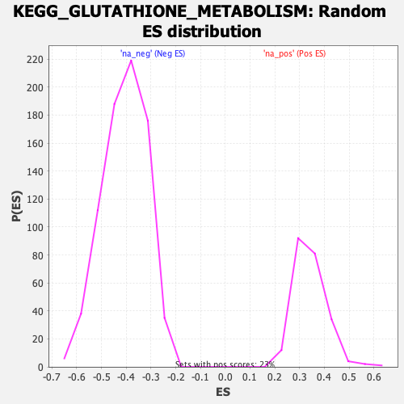

| | | Dataset | prerank |
| Phenotype | NoPhenotypeAvailable |
| Upregulated in class | na_pos |
| GeneSet | KEGG_GLUTATHIONE_METABOLISM |
| Enrichment Score (ES) | 0.71090335 |
| Normalized Enrichment Score (NES) | 2.0764372 |
| Nominal p-value | 0.0 |
| FDR q-value | 0.0 |
| FWER p-Value | 0.0 |
Table: GSEA Results Summary
 Fig 1: Enrichment plot: KEGG_GLUTATHIONE_METABOLISM
Fig 1: Enrichment plot: KEGG_GLUTATHIONE_METABOLISM
Profile of the Running ES Score & Positions of GeneSet Members on the Rank Ordered List
| SYMBOL | RANK IN GENE LIST | RANK METRIC SCORE | RUNNING ES | CORE ENRICHMENT | | 1 | ANPEP | 23 | 3.576 | 0.1176 | Yes |
| 2 | GPX3 | 65 | 2.947 | 0.2141 | Yes |
| 3 | GSTM4 | 167 | 2.319 | 0.2888 | Yes |
| 4 | GSTA4 | 235 | 2.076 | 0.3561 | Yes |
| 5 | GSTT2 | 335 | 1.885 | 0.4164 | Yes |
| 6 | GGCT | 917 | 1.317 | 0.4491 | Yes |
| 7 | MGST1 | 1272 | 1.155 | 0.4806 | Yes |
| 8 | LAP3 | 1285 | 1.147 | 0.5182 | Yes |
| 9 | GGT6 | 1395 | 1.104 | 0.5526 | Yes |
| 10 | GPX4 | 1596 | 1.030 | 0.5829 | Yes |
| 11 | SMS | 1751 | 0.983 | 0.6125 | Yes |
| 12 | IDH1 | 1965 | 0.926 | 0.6391 | Yes |
| 13 | GSTZ1 | 2474 | 0.809 | 0.6563 | Yes |
| 14 | PGD | 3360 | 0.657 | 0.6615 | Yes |
| 15 | GGT5 | 4107 | 0.561 | 0.6661 | Yes |
| 16 | GSTM1 | 4556 | 0.509 | 0.6745 | Yes |
| 17 | GCLM | 4788 | 0.487 | 0.6863 | Yes |
| 18 | GSTM5 | 4865 | 0.481 | 0.7007 | Yes |
| 19 | GPX1 | 5633 | 0.413 | 0.7001 | Yes |
| 20 | GGT1 | 5765 | 0.403 | 0.7109 | Yes |
| 21 | SRM | 6736 | 0.333 | 0.7038 | No |
| 22 | IDH2 | 7383 | 0.294 | 0.7015 | No |
| 23 | GSTK1 | 7441 | 0.290 | 0.7100 | No |
| 24 | GSTO2 | 8596 | 0.227 | 0.6960 | No |
| 25 | OPLAH | 8761 | 0.220 | 0.7002 | No |
| 26 | GSR | 10148 | 0.158 | 0.6795 | No |
| 27 | GSTA3 | 10205 | 0.155 | 0.6836 | No |
| 28 | RRM1 | 10511 | 0.143 | 0.6826 | No |
| 29 | GSTM2 | 10793 | 0.133 | 0.6818 | No |
| 30 | MGST3 | 10822 | 0.131 | 0.6856 | No |
| 31 | GSTM3 | 12503 | 0.076 | 0.6568 | No |
| 32 | G6PD | 13948 | 0.035 | 0.6310 | No |
| 33 | GSTP1 | 13957 | 0.035 | 0.6320 | No |
| 34 | GSTA2 | 14097 | 0.032 | 0.6305 | No |
| 35 | GPX2 | 15055 | 0.010 | 0.6130 | No |
| 36 | GPX5 | 15435 | 0.004 | 0.6060 | No |
| 37 | RRM2 | 21772 | -0.000 | 0.4878 | No |
| 38 | GSTA5 | 29193 | -0.052 | 0.3511 | No |
| 39 | GPX6 | 29866 | -0.054 | 0.3404 | No |
| 40 | RRM2B | 30404 | -0.062 | 0.3324 | No |
| 41 | GSTA1 | 31857 | -0.068 | 0.3076 | No |
| 42 | GSTO1 | 33135 | -0.082 | 0.2864 | No |
| 43 | MGST2 | 33401 | -0.086 | 0.2844 | No |
| 44 | ODC1 | 34651 | -0.104 | 0.2645 | No |
| 45 | GPX7 | 34745 | -0.105 | 0.2662 | No |
| 46 | GSS | 42625 | -0.345 | 0.1306 | No |
| 47 | TXNDC12 | 44537 | -0.446 | 0.1097 | No |
| 48 | GCLC | 44976 | -0.472 | 0.1171 | No |
| 49 | GGT7 | 51663 | -1.357 | 0.0372 | No |
Table: GSEA details [plain text format]

Fig 2: KEGG_GLUTATHIONE_METABOLISM: Random ES distribution
Gene set null distribution of ES for KEGG_GLUTATHIONE_METABOLISM